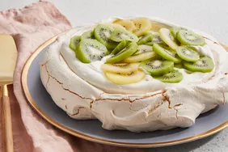

Pavlova Recipes

Description:
Pavlova is an elegant and impressive dessert of crisp white meringue that's fluffy
and marshmallowy inside, topped with whipped cream and fruit.
Ingredients
- 4 large egg whites
- 1 ¼ cups white sugar
- 2 teaspoons cornstarch
- 1 teaspoon vanilla extract
- 1 teaspoon lemon juice
- 1 pint heavy cream
- 6 kiwi, peeled and sliced
Steps
- Preheat the oven to 300 degrees F (150 degrees C).
- Line a baking sheet with parchment paper; draw a 9-inch circle on the parchment paper.
- Beat egg whites in a glass, metal, or ceramic bowl until stiff but not dry. Gradually add sugar, about 1 tablespoon at a time, beating well after each addition. Continue beating until meringue is thick, white, and glossy.
- Gently fold in cornstarch, vanilla extract, and lemon juice.
- Spoon mixture inside the circle drawn on the parchment paper. Working from the center, spread mixture toward the outside edge and build the edge slightly. This should leave a slight depression in the center.
- Bake in the preheated oven until meringue is dry and sounds hollow when tapped, about 1 hour. Cool on a wire rack.
- Beat heavy cream in a medium bowl until stiff peaks form; set aside. Remove meringue from the parchment paper and place on a flat serving plate.
- Fill center of meringue with whipped cream and top with kiwi slices.
- Top with fruit and enjoy!